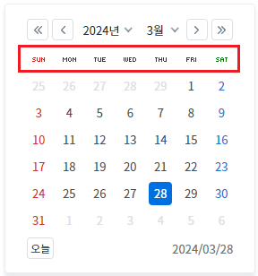
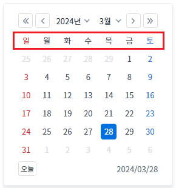
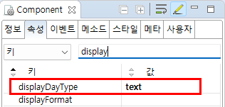

Calendar의 'displayDayType' 속성을 사용하여, 요일 영역을 브라우저에 렌더링하는 방법을 설정하는 예제입니다. 이미지로 출력 또는 문자열로 출력할 수 있습니다.
요일 영역을 이미지(기본 설정 값)로 출력
요일 영역을 문자열로 출력
설정별로 구성된 컴포넌트의 요일 영역의 출력 방법을 확인합니다.
예제 프로젝트의 경우 이미지와 문자열의 차이가 확연하게 드러나지 않습니다.
브라우저의 개발자 도구를 통해 출력된 요소(elements)를 명확하게 비교할 수 있습니다.
예제 영역 '(기본) 요일을 이미지로 출력'에 구성된 Calendar를 확인합니다.
Image 1.브라우저(Chrome) 실행 예시 - 요일 영역을 이미지(기본 설정 값)로 출력된 상태

예제 영역 '요일을 문자열로 출력'에 구성된 Calendar를 확인합니다.
Image 2.브라우저(Chrome) 실행 예시 - 요일 영역을 문자열로 출력

컴포넌트의 'displayDayType' 속성을 'text'로 정의합니다. 이 속성을 적용하지 않은 경우 기본 값은 'image'입니다.
Image 3.웹스퀘어 스튜디오의 Component View 예시

Example 1.Source
<!-- calendar의 소스 본문 예시 --> <w2:calendar displayDayType="text"> </w2:calendar>